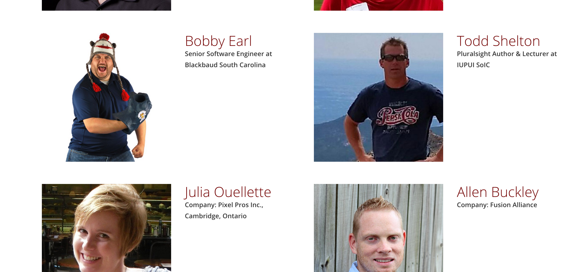

2-day developer conference in Columbia, SC.
Focused on the use of Open Source technology.
DIG SOUTH is the South’s Interactive Festival, the place where leading brands meet the smartest startups and participants connect, hear great content, raise capital, recruit talent and launch new startups.
Outside events are no fun when it's code and raining.
Blackbaud = Sophistication
That's more like it.
GIANT Conference exists because creativity and community go together like a guitar and amp. GIANT is for people who do rad work. We’ll talk about rad work at a technical level, and we’ll talk about rad work in abstract levels.
Phenomenal Branding
Famous Designer Doppelganger
Inspired to sing Jasmine's part in "A Whole New World"
The Developers Conference brings together SDK users to share best practices, exchange ideas and build relationships with peers. There will be sessions presented by your peers and sessions presented by Blackbaud representatives.
Let's do this!
Dev Workshop Conference aims to bring the best web development instructors and the most driven students together for two days of skill building, project collaboration, and networking.

Sky UX is Blackbaud’s next-generation user-experience framework. It provides a design philosophy to create a consistent, cohesive experience for Blackbaud services and a toolset to implement the design philosophy.
(Thanks John!)
Sky UX is not owned by the Sky team - it's owned by all teams!